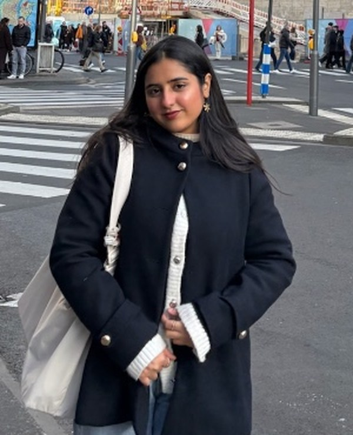
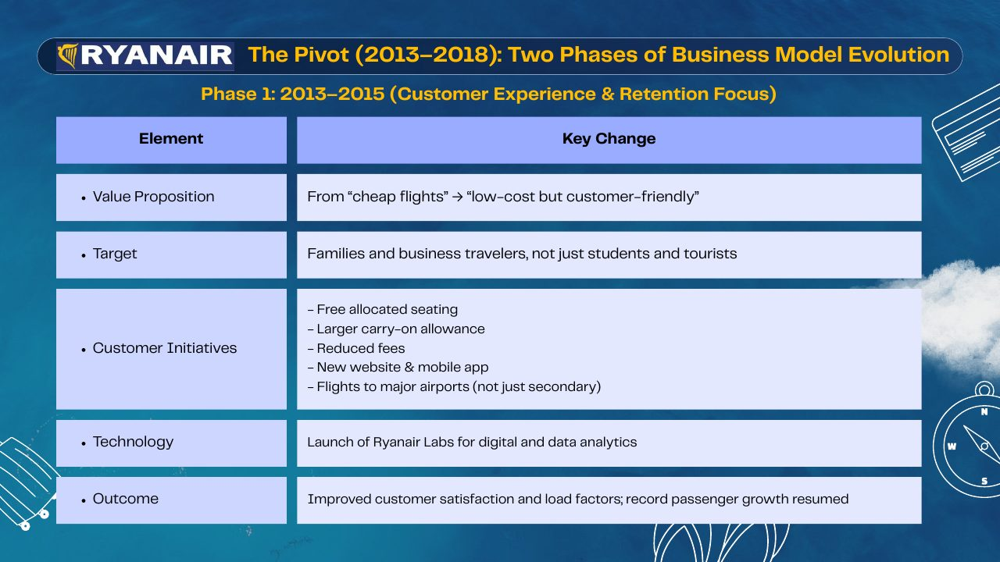

Hello, I'm Aayushi Saini.
Business graduate working where strategy meets operations. I coordinate suppliers and B2B customers day to day, and have led projects in consulting, finance, sustainability and entrepreneurship. MSc in Business & Technology from the University of Basel.
- 📍 Basel, Switzerland
- Open to relocation
- English C1 · German A2 · Hindi

I like the part of business where a plan meets the real world: the supplier quote, the delivery date, the customer waiting on an answer.
Alongside my master's in Basel I have worked as the main contact for 20 to 30 B2B accounts, negotiating supplier quotes, checking EU product compliance and keeping stock available in an ERP system.
I'm looking for a role in operations, supply chain, procurement, consulting or innovation, and I'm happy to relocate for it.
Explore

Beiersdorf HR Analytics: piloting a four-day work week
A six-month controlled pilot design with a KPI framework, dashboard and causal measurement.
Read the case →
Ryanair: from reputation crisis to digital travel company
Why Europe's lowest-cost airline changed its model in 2013, and whether it paid off.
Read the case →
Loop & Loom: circular fashion for Gen Z
A circular fashion concept store, tested with customers and checked with a financial model. 2nd of 20 teams.
Read the case →Let's talk.
I'm open to roles in operations, supply chain, procurement, consulting and innovation, and available to relocate.